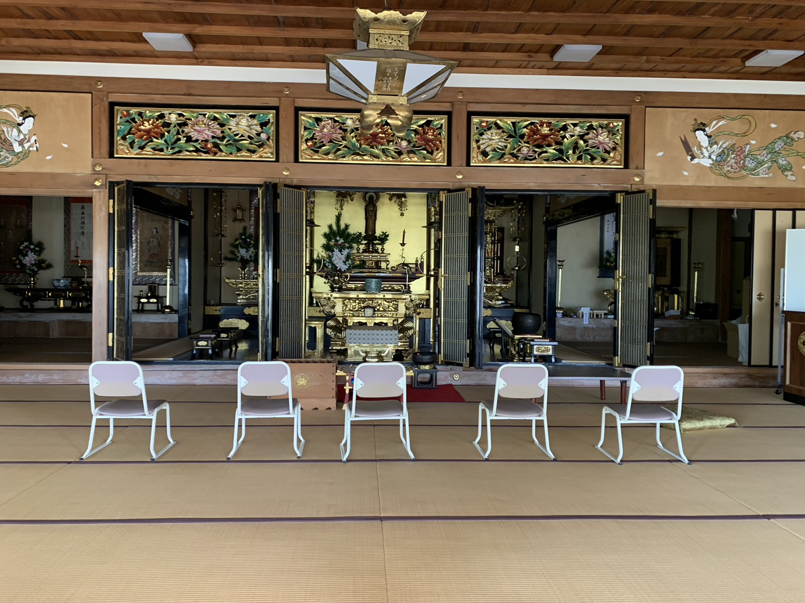
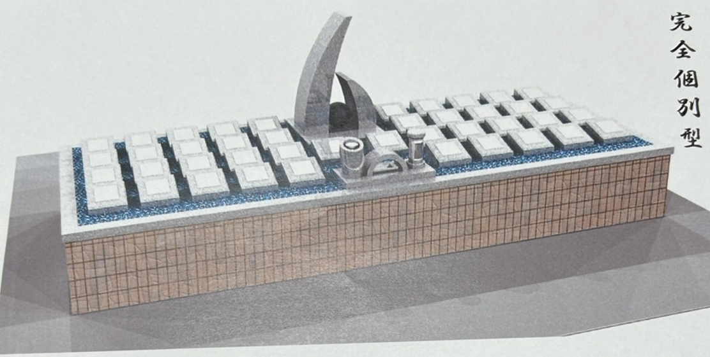
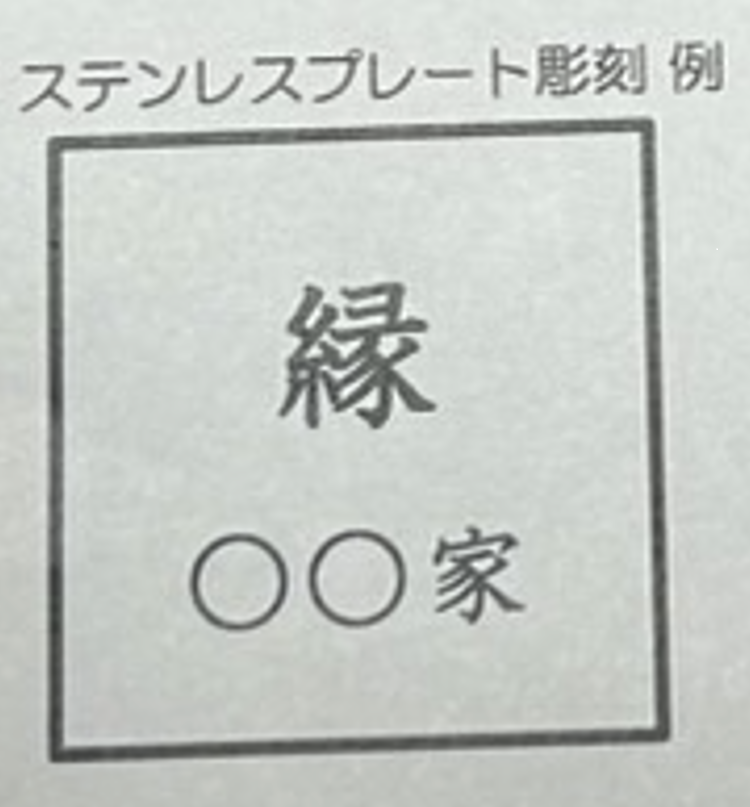

浄徳寺 個別型永代供養墓
安心と信頼の永代供養プラン
お寺の写真
お墓・プレート写真
永代供養墓イメージ
ステンレスプレート彫刻イメージ
サービス・料金
4列
25万円
3列
29万円
2列
33万円
最前列
37万円
- 永代使用料、永代管理料、納骨法要料
- 銘板 白御影石 25cm✕25cm✕43cm~140cm
- ステンレスプレート15cm✕15cm 1枚
別途 納骨式お手伝い料 1万円。
納品袋をご用意いたします。
特徴・サービス
永代供養
浄徳寺が永代にわたり供養します。
檀家制度不要
どなたでもお気軽にご利用いただけます
宗旨宗派不問
全ての宗教・宗派の方に対応
無念仏の心配なし
合葬されることはありません
仏様の人数制限なし
ご安心いただける無制限の安置
※二本目以降継続法要料3万円。
アクセス
住所：兵庫県川西市西多田1-12-8
- 川西能勢口駅から車で約15分
- 川西池田駅から車で約15分
- 宝塚IC（中国自動車道）から車で約9分
お問い合わせ
〒666-0138 兵庫県川西市西多田1-12-8
TEL: 072-793-1847